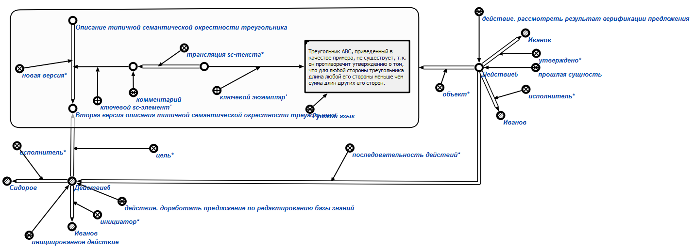

Команда утверждения результата верификации предложения предназначена для утверждения* результата верификации предложения*. Единственным аргументом команды является знак действия рассмотреть результат верификации предложения. Результатом выполнения команды является утверждение* результата верификации предложения* и инициирование нового действия доработать предложение по редактированию базы знаний, целью* которого является новая версия* верифицируемой структуры. Например:
